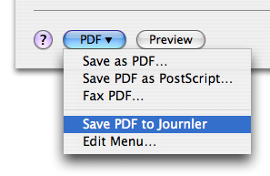
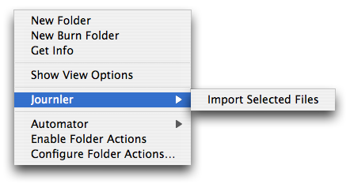
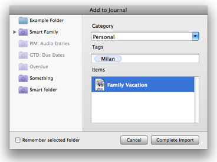

Get Stuff In
Get Stuff In
PDF Service
 No matter what application you are using you can always print the contents of a document directly to your journal. Choose Print from the File menu and in the dialog that appears click once on the PDF button at the bottom left. The item you want is Save PDF to Journler.Saving the PDF to Journler produces a PDF document resource which is attached to its own new entry. The document is permanently saved in your journal, so you don't need to worry about losing it later on. And when you're ready to view tha new PDF you'll be able to take advantage of Journler's advanced PDF technologies.
Finder Context Menu
 Stumbled across a document on your computer or a network that you'd like to store in your journal? Use Journler's system context menu, available anytime you are in the Finder.Right-click on a file and from the menu near the bottom choose Journler > Import Selected Files. Similar to the PDF Service, Journler imports the selection and permanently stores it in your journal alongside its own, new entry.
Tip: Select more than one file and import them simultaneously.
A Dock Drop
This one is easy. Drag anything to the Journler Dock icon and Journler imports it, either converting the data to a new entry or creating a resource and attaching that to an entry. For example, drag a URL from Safari to the icon and Journler downloads a web archive representation of the page and attachs that to its own entry.*Services Menu: ⇧⌘J
Every application on your Mac has access to the services provided by other applications. It's a way of sharing information between programs. Journler provides two such services.The service menu is located in an application's main menu. For example, from the Finder choose the Finder menu at the far top left of your scren. You'll see a Services item just over halfway down. Journler will be among the items, providing you with two options, Append Selection to Entry and New Entry with Selection. Make sure you have something selected, text or even a URL or image, and take your pick.

Drop Box
On the one hand Journler's drop box is just a folder that you add files to. You'll find it in either your Home > Library > Application Support > Journler folder or in your Home > Documents > Journler folder, depending upon when you first began using Journler. You will also find an Alias to the drop box on your desktop.When Journler is not running you can place a file in the drop box and continue with your work. Nothing happens until you launch Journler, at which time the files will be imported into your notebook.
Tip: The drop box imports files by default, copying them to your journal. Hold down the Alt/Option and Command keys when adding a file to the drop box. The Finder first creates an alias which Journler then imports, effectively linking the file from your journal instead of copying it there.
The Drop Box Import Dialog
When Journler is running, placing a file into the drop box brings up the import dialog, a routing center for the data you want to add. Actually, I've mislead you. Journler also displays the dialog anytime you use the service menu or drag onto the dock icon (although file drags require the drop box for the visual cue).The dialog comes to the front when you initiate a service or drop box request, but Journler does not allow it to get in the way of your workflow. Instead, the panel hovers over your activity without shifting focus to Journler. Quickly select the folders you'd like to add the data to and specify additional categories or keywords. Cmd-click a folder to deselect it. Hit return and you're finished. Journler sends you back to your work while the new data is added to your journal in the background. And of course, auto-tagging is supported.
What happens to a file when I cancel an import?
If you decide to cancel a drop box import Journler first keeps the file in its Drop Box directory in the Finder but adds a dash ( - ) to the front of its name. As long as Journler is running you can go into the Drop Box in the Finder and recover the file. When you quit, however, Journler immediately moves everything in the Drop Box to the Finder's Trashcan without emptying the trash. You can still recover cancelled imports but you will now have to look in the Trash to find them.Tip: Don't like the visual cue but still want to get stuff in fast? Disable the import panel in Journler's Advanced Preferences.